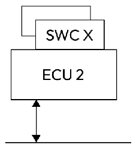
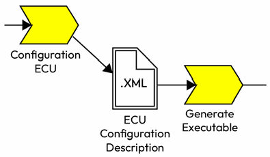

第3章 AUTOSAR 方法论与数据交换格式
AUTOSAR Fundamentals and Applications — Hossam Soffar 著 | AI 辅助翻译
本章将深入探讨 AUTOSAR 方法论，重点介绍 AUTOSAR 规范中描述的典型开发工作流。我们还将了解如何使用 AUTOSAR 模板进行数据交换。这些模板在确保开发过程中不同利益相关者之间的一致性和标准化方面发挥着关键作用。
我们将在本章中讨论以下主题：
- AUTOSAR 方法论与开发工作流
- 系统配置
- ECU 配置
- 代码生成
- 使用模板进行数据交换
- AUTOSAR 一致性类别
在深入了解更多细节之前，让我们先解释一下什么是 ECU 配置。
什么是 ECU 配置？
AUTOSAR 中的 ECU 配置涉及设置一个 ECU 的软件和硬件资源，以满足特定的车辆功能。这个过程包括：选择哪些 AUTOSAR SWC 将部署在该 ECU 上；建立基础的 BSW 层，负责处理通信、内存和诊断；定义标准化的协议和接口，用于 ECU 与其他 ECU 以及外部系统之间的通信；管理硬件资源（如 CPU、内存和外设），以确保软件组件高效运行。这种结构化的方法确保每个 ECU 都能被量身定制，从而在车辆整体系统中有效地执行其指定功能。
虽然 AUTOSAR 针对不同的任务提供了多种方法论，但本次讨论将聚焦于最关键的环节，即根据软件和硬件描述为每个 ECU 生成可配置的可执行文件。此工作流主要分为三个部分，如下图所示：

图 3.1 – AUTOSAR 工作流
让我们逐一深入了解这些部分：
- 工作流的第一部分处理基于模板的硬件、软件和系统约束描述，最终生成包含 ECU 软件映射的完整系统描述。
- 第二部分详细描述了单个 ECU 的基础软件和运行时环境（RTE）的配置。
- 第三阶段涉及生成代码并为 ECU 软件创建可执行文件。该可执行文件是编译和链接各种软件组件及基础软件对象后的产物。
在继续探索 AUTOSAR 的过程中，我们现在将注意力转向系统配置。系统配置侧重于软件组件的配置及其在系统内的交互，以及它们到相应 ECU 的映射。
理解 AUTOSAR 方法论
AUTOSAR 方法论是一种结构化的方法，用于获取汽车系统中各个 ECU 的可执行文件。它主要由三个步骤组成：
- 系统配置：此步骤涉及设置整个系统。这包括定义整体架构、ECU 之间的互连以及指定通信协议。
- ECU 配置：此步骤专注于单个 ECU。在这一步中，提取每个 ECU 相关的特定信息，并为后续操作做好准备。这些信息对于根据每个 ECU 的需求和功能定制其配置至关重要。
- 代码生成：在此步骤中，生成每个 ECU 的实际可执行代码。该代码源自前面步骤中获得的配置设置和规范。它确保每个 ECU 按照其在系统中指定的功能运行。
让我们更详细地了解这些步骤。
系统配置
原始设备制造商（OEM）在开发 AUTOSAR 系统中扮演着关键角色。OEM 负责定义系统架构、指定需求，并监督来自不同供应商的软件组件的集成。
要在 AUTOSAR 系统中创建系统提取，OEM 通常执行以下步骤：
- 定义系统需求：OEM 首先定义汽车系统的高层需求和功能。这可能包括性能、安全、安保和通信目标。
例如，在开发高级驾驶辅助系统（ADAS）时，OEM 设定自适应巡航控制、车道偏离警告和紧急制动等功能的需求。 - 识别软件组件和接口：OEM 根据需求识别必要的软件组件及其接口。这可能涉及复用现有组件或开发新组件。
对于 ADAS，OEM 识别出传感器融合、车辆控制、用户界面等组件以及相应的接口。 - 设计系统架构：OEM 设计整个系统架构，指定软件组件之间的交互方式，并将它们映射到 ECU。
OEM 确定传感器融合组件如何与车辆控制组件通信，并将这些组件映射到 ADAS 中的特定 ECU。 - 开发或采购软件组件：OEM 自行开发所需的软件组件，或从供应商处采购。
对于 ADAS，OEM 可能在内部开发传感器融合组件，同时从专业供应商处采购车辆控制组件。 - 创建系统提取：OEM 将软件组件、硬件拓扑和配置参数组合到系统提取中。
ADAS 的系统提取包含软件组件、ECU 映射，以及通信、传感器和执行器的配置参数。
下图展示了一个涉及多个 ECU 的系统提取示例，展示了 SWC 之间的映射以及每个 ECU 使用的通信通道：

图 3.2 – 系统描述示例
在系统配置阶段，OEM 将软件功能分配到系统拓扑中的 ECU 上。虽然此时可以做出关于特定组件实现的决策，但通常不会在这个高层阶段做出这些选择。
此外，OEM 在此步骤中创建通信矩阵，详细说明 ECU 之间的通信介质、数据及相关属性，如时序、校验和等。此步骤的输出被保存为系统配置描述（System Configuration Description）。从图 3.2 中你可以看到此步骤的结果。通常，一个系统由多个 ECU 和各种通信通道组成。这些 ECU 之间的通信被建模，如果帧需要从一个通信总线网关转发到另一个通信总线，则某个 ECU 可以充当网关。
目前有许多软件工具可用于协助此过程。有了这些理解，让我们继续下一步：配置特定的 ECU。
ECU 配置
在大多数情况下，ECU 由不同的供应商为特定车辆制造。因此，将从系统配置描述中提取每个 ECU 的特定信息，并交给各个供应商。这个提取物被称为 ECU 提取（ECU Extract），如下图所示：

图 3.3 – 单个 ECU 提取描述
我们使用 AUTOSAR 创作工具来创建高层设计，其中包括依据前面讨论的模板（包括通信矩阵、拓扑等）生成的软件组件描述、ECU 资源描述和系统描述文件。一旦我们有了这三个组件，基于 AUTOSAR 方法论的软件开发过程大体上可以分解为两部分：应用/SWC 软件开发和 ECU 配置过程。
在应用 SWC 开发过程中，以 SWC 描述文件为输入，该文件描述了需要开发的软件组件元素，如端口、接口和触发事件等；需要注意的是，SWC 元素将在后续章节中详细讨论。
我们为 ECU 配备实现所需的所有关键信息，包括任务调度、选择适当的 BSW 模块、配置 BSW、将可运行实体分配到任务、通信参数，以及确保系统最佳性能的各种其他配置值。输出是 ECU 配置描述（ECU Configuration Description）文件，它包含微控制器端口定义、引脚分配、时钟配置以及通信通道类型（如控制器局域网（CAN）、Ethernet 和 FlexRay），此外还包括特定的服务模块，如通信模块（COM）或特定外设，如串行外设接口（SPI）、通用异步收发器（UART）、集成电路间总线（I2C）或其他外设。
SWC 的开发将在与此步骤并行进行，我们将在第 4 章中进一步详细讨论。ECU 配置描述文件用于生成 RTE 和 BSW 的某些部分。这些组件随后与 SWC 一起编译，最终为单个 ECU 创建可执行文件，如下图所示：

图 3.4 – 可执行文件生成过程
接下来，我们将向你介绍 AUTOSAR 中的代码生成过程。这是开发周期中至关重要的一步，它确保配置和模板能够高效、准确地转换为功能性软件。
代码生成
在此过程中，配置工具为应用软件生成代码模板。这些 SWC 与 BSW 层之间的交互决定了 RTE 代码的生成方式。
对于每个 BSW 模块，都会创建包含在 AUTOSAR 配置工具中完成的所有用户自定义配置的配置文件。还需要注意的是，这些配置包含类型子集。这些被称为配置类别（Configuration Classes），指的是在开发过程中可以设置或修改特定参数的不同阶段。这些类别决定了配置参数何时以及如何被定义，以及在软件开发过程中何时变为固定不变的。让我们来看看 AUTOSAR 中三种主要配置类别之间的区别：
- 预编译时（Pre-compile time）：此配置类别的参数在编译过程开始之前设置。它们通常被硬编码或在源代码中定义为宏或常量。这些参数在编译后无法更改。
预编译时参数的一个示例用例是在开发过程中启用错误跟踪宏。 - 链接时（Link time）：此配置类别的参数在编译之后、链接过程中使用。这些参数通常以目标代码文件的形式指定，并在链接过程之后变为固定——与在编译器预处理器阶段（如
#define常量）建立的预编译时配置形成对比。
链接时参数的一个示例用例是使用包含 CAN 通信配置（如通道标识符）的配置结构体。 - 构建后（Post-build time）：此配置类别的参数可以在整个构建过程（编译和链接）完成之后更改。构建后参数有两种替代方式：
- 可加载（Loadable）：这些参数存储在不可执行的二进制文件中，可以下载到 ECU。参数值可以在 ECU 的启动过程中更改。
- 可选（Selectable）：这些参数存储在链接到可执行文件的多个备选配置集中。配置设置可以在 ECU 启动过程中选择，并且可以在启动期间下载到 ECU。
我们已经探索了 AUTOSAR 中的三种主要配置类别：预编译时、链接时和构建后。每个类别在确定配置参数何时以及如何在软件开发过程中定义和固定方面都发挥着作用。通过理解这些类别及其含义，开发人员可以有效地管理和优化其基于 AUTOSAR 的系统的配置。
在下一节中，我们将介绍 AUTOSAR 的模板。我们还将了解软件和系统是如何被建模并在不同利益相关者之间共享的。
使用模板进行数据交换
上述 ARXML（AUTOSAR XML） 片段定义了一个名为 CanFrameExample 的 CAN 帧，长度为 8 字节。它展示了如何将 PDU 映射到 CAN 帧，起始位置为 0，采用最高有效字节在后的字节序。
AUTOSAR 模板充当 AUTOSAR 方法中使用的信息结构的正式化表示，用于定义软件组件、模块或配置参数。模板通过提供可以由开发人员根据特定应用需求实例化和定制的预定义框架，确保不同 ECU 和车辆平台之间的一致性、模块化和效率；它们确保在开发过程的不同阶段中实现统一性、标准化和顺畅的数据交换。这些模板使用统一建模语言（UML（Unified Modeling Language，统一建模语言））进行规范，并依赖 AUTOSAR UML Profile。该 Profile 引入了一系列构造型（stereotype）来表达 AUTOSAR 概念，例如 ECU 的硬件元素、软件组件、端口、数据类型或接口描述。这些构造型根据其在各类模板中的应用，被系统地排列到各个包（package）中。
所有模板都依赖 AUTOSAR UML Profile。UML Profile 中的模板包是相互关联的，如下图所示。两个包之间的连接表示一个包复用了另一个包中定义的概念：

图 3.5 – AUTOSAR UML Profile
让我们更详细地了解上图中所示的各个组件：
- 软件组件模板（Software Component Template）描述了系统的软件层面。该模板包含组件类型的通用描述，包括端口原型和端口接口。此外，它还区分了复合组件，从而形成软件组件的层次结构。
- ECU 资源模板（ECU Resource Template）概述了 ECU 的硬件资源，例如发动机控制模块（ECM）中的资源，包括物理通信介质和外设，如 ADC 和通用输入输出（GPIO）。所提供的信息对于配置 ECU 抽象层和微控制器以针对该 ECU 进行精确定制至关重要。
- 基础软件模块描述模板（Basic Software Module Description Template）涉及基础软件的各个元素。它包含与基础软件模块和集群相关的所有数据。此模板包与软件组件模板之间存在关联，因为两者都详细描述了实现特性和资源使用情况。
- 系统模板（System Template）充当软件组件模板和 ECU 资源模板之间的桥梁。它在系统的软件视角和 ECU 的物理布局之间建立联系。此外，该模板还允许描述与此连接相关的约束条件。
AUTOSAR 中的每个模板都遵循通用结构（Generic Structure），该结构建立了基本属性。例如，其中一个属性是模板中的每个元素都拥有一个唯一的标识符或层次组织结构；通用结构以层次化方式组织元素，其中的元素根据其在各种模板中的应用被组织到各个包中。这些包有助于将相关元素组合在一起，并在 AUTOSAR 系统内保持逻辑组织。例如，在以下两个片段中，我们展示了 CAN 帧在 AUTOSAR XML（ARXML）中的建模方式；每个帧都将在 CanFrame 父节点内进行描述。以下是在 ARXML 中定义 CAN 帧的示例：
<AR-PACKAGES>
<AR-PACKAGE>
<SHORT-NAME>CanFrame</SHORT-NAME>
<ELEMENTS>
<CAN-FRAME>
<SHORT-NAME>CanFrameExample</SHORT-NAME>
<FRAME-LENGTH>8</FRAME-LENGTH>
<PDU-TO-FRAME-MAPPINGS>
<PDU-TO-FRAME-MAPPING>
<SHORT-NAME>Cluster_0_Status_0</SHORT-NAME>
<PACKING-BYTE-ORDER>MOST-SIGNIFICANT-BYTE-LAST</PACKING-BYTE-ORDER>
<PDU-REF DEST="I-SIGNAL-I-PDU">/PDU/CanFrameExample</PDU-REF>
<START-POSITION>0</START-POSITION>
</PDU-TO-FRAME-MAPPING>
</PDU-TO-FRAME-MAPPINGS>
</CAN-FRAME>
</ELEMENTS>
</AR-PACKAGE>
</AR-PACKAGES>这段 ARXML 片段定义了一个名为 CanFrameExample 的 CAN 帧，其长度为 8 字节。它包含将 CanFrameExample 协议数据单元（PDU）映射到该 CAN 帧的配置，起始位置为 0，最高有效字节最后放置。该映射的标识为 Cluster_0_Status_0。
CAN 帧触发是描述消息如何在 ECU 之间通过 CAN 总线发送和接收的一种方式：
<CAN-FRAME-TRIGGERING>
<SHORT-NAME>FT_CanFrameExample</SHORT-NAME>
<FRAME-PORT-REFS>
<FRAME-PORT-REF DEST="FRAME-PORT">/ECU/MyECU/CAN/FP_CanFrameExample_Rx</FRAME-PORT-REF>
</FRAME-PORT-REFS>
<FRAME-REF DEST="CAN-FRAME">/CanFrame/CanFrameExample_OCAN</FRAME-REF>
<PDU-TRIGGERINGS>
<PDU-TRIGGERING-REF-CONDITIONAL>
<PDU-TRIGGERING-REF DEST="PDU-TRIGGERING">/Cluster/CAN/CHNL/FT_CanFrameExample</PDU-TRIGGERING-REF>
</PDU-TRIGGERING-REF-CONDITIONAL>
</PDU-TRIGGERINGS>
<CAN-ADDRESSING-MODE>STANDARD</CAN-ADDRESSING-MODE>
<CAN-FRAME-RX-BEHAVIOR>ANY</CAN-FRAME-RX-BEHAVIOR>
<CAN-FRAME-TX-BEHAVIOR>CAN-200</CAN-FRAME-TX-BEHAVIOR>
<IDENTIFIER>1890</IDENTIFIER>
</CAN-FRAME-TRIGGERING>这段 ARXML 片段概述了 PT_CanFrameExample CAN 帧的触发配置，详细说明了它如何与某个 ECU 的接收（CanFrameExample_Rx）和发送（CanFrameExample_oCAN）端口关联，并引用其对应的 PDU（PT_CanFrameExample）。它将寻址模式设置为 STANDARD，定义了特定的接收和发送行为，并为该帧分配了唯一的标识符（1809），这决定了该 CAN 帧在消息通信过程中如何在 CAN 网络内进行交互。
在下一节中，我们将探讨 AUTOSAR 中不同类型的一致性类别，以及它们如何确保 AUTOSAR 生态系统中的兼容性和互操作性。
AUTOSAR 的一致性类别
一致性类别（Conformance Classes）定义了 ECU 必须支持的最小 BSW 模块集合，才能被认为符合特定的一致性类别。通过遵循某个一致性类别，ECU 制造商可以确保其产品与其他符合 AUTOSAR 标准的系统和组件兼容。让我们列出各种一致性类别：
- 一致性类别 1（CC（Conformance Class，一致性类别）1）：此类代表 AUTOSAR 支持的最基本级别，主要关注通信和基本诊断等基本功能。符合 CC1 的 ECU 通常资源有限，用于简单的应用场景。
- 一致性类别 2（CC2）：符合 CC2 的 ECU 提供比 CC1 更高级的功能，例如支持复杂设备驱动、内存管理和高级诊断。CC2 适用于资源更丰富、用例更复杂的 ECU。
- 一致性类别 3（CC3）：此类专为高性能 ECU 设计，具有先进的能力，例如支持多核处理器、高级调度和复杂的通信协议。CC3 通常用于高端、安全关键型应用。
- 一致性类别 4（CC4）：CC4 代表 AUTOSAR 支持的最先进级别，融合了 Adaptive Platform 支持、高级网络安全以及对新通信协议的支持等功能。此类适用于需要尖端技术和功能的高度复杂 ECU。
总之，我们探讨了 AUTOSAR 的各个一致性类别，它们定义了 ECU 被认为符合标准所需的最小 BSW 模块集合。从 CC1 的基本功能到 CC4 的高级能力，这些分类确保了不同 AUTOSAR 兼容系统和组件之间的兼容性。理解了这些一致性类别后，你现在可以更好地为特定的 ECU 开发需求选择合适的一致性类别，并确保与汽车生态系统中其他组件的无缝集成。
本章小结
在本章中，我们探讨了 AUTOSAR 方法论，概述了开发 AUTOSAR 系统所需的一系列活动，重点关注软件组件实现与 ECU 配置的独立性。我们还讨论了数据交换格式，特别是 AUTOSAR 模板——它们是在整个开发过程中使用的信息结构的正式化表示。此外，我们深入研究了系统设计与建模过程、代码生成与配置，以及各种一致性类别，这些类别定义了 ECU 被认为符合特定一致性类别所需的最小 BSW 模块集合。
通过理解这些核心概念，你可以利用 AUTOSAR 方法论进行系统设计，使用 AUTOSAR 模板确保顺畅的数据交换，并遵循适当的一致性类别以实现与其他 AUTOSAR 兼容系统和组件的兼容性。
在下一章中，我们将开始探索软件组件和 RTE，作为深入了解 AUTOSAR 更多构建模块的第一步。
思考题
请回答以下问题，以评估你对本章的整体理解：
- 描述使用 AUTOSAR 方法论设计汽车系统所涉及的步骤。
- AUTOSAR 的一致性类别是什么？
- 讨论不同的配置类别。